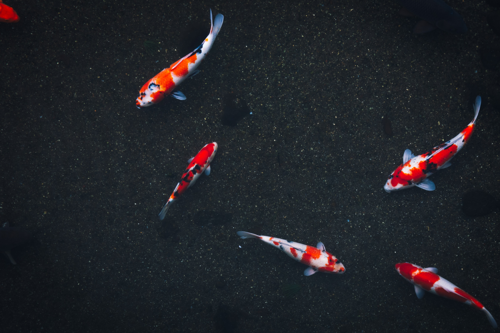

Pisces
WATER SIGN
SYMBOL : THE FISH

Dear Pisces,
As I myself is a pisces, I can guarantee that pisces are super emotional and super sensitive. They are very highly intutive, and get along with different types of people of different ages. They adore being imaginative and love all things art related. They are not as mysterious as people think they are, although they are overflowing with emotions. They work better alone than in groups, and value alone time very much. The bad traits of a Pisces are that he or she can be very attached towards people, which can sometimes lead to being seen too clingy by others. They can sometimes be too stuck in their own imagination, leading them to be impractical with unrealistic perspective of the world. Eminient pisces personalities include Justin Bieber, Rihanna, Millie Bobby Brown and of course, Me! :D
Zodiac Signs Homepage
AUTHOR'S NOTE